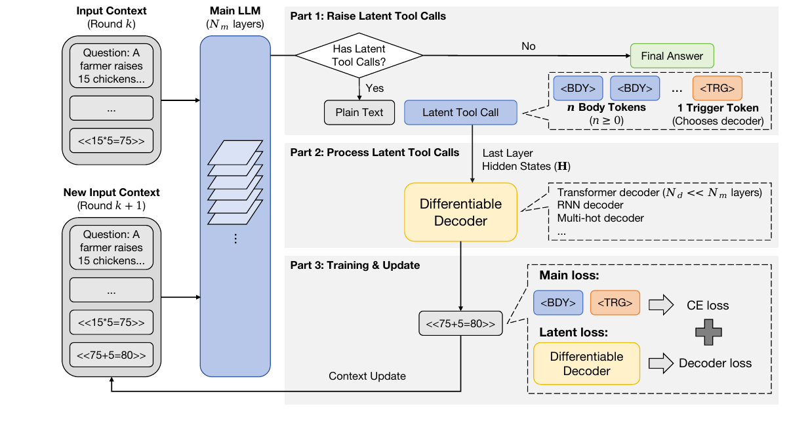
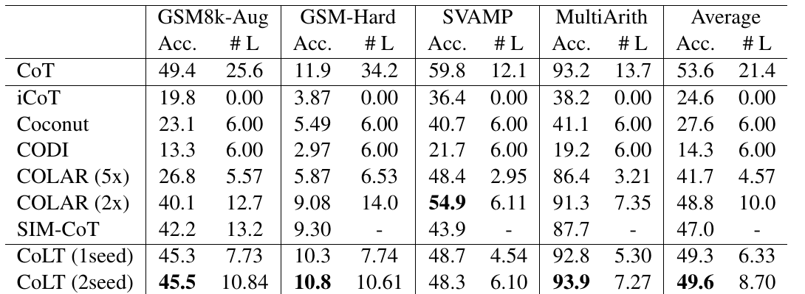
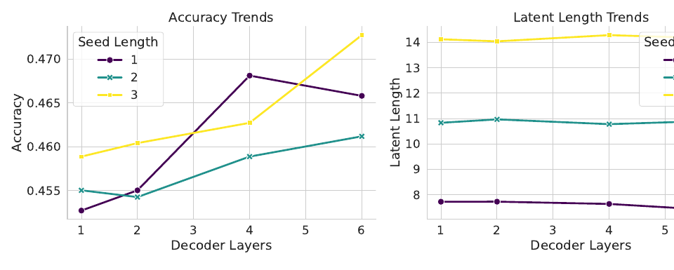
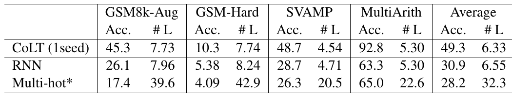
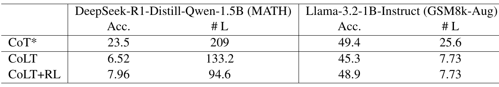
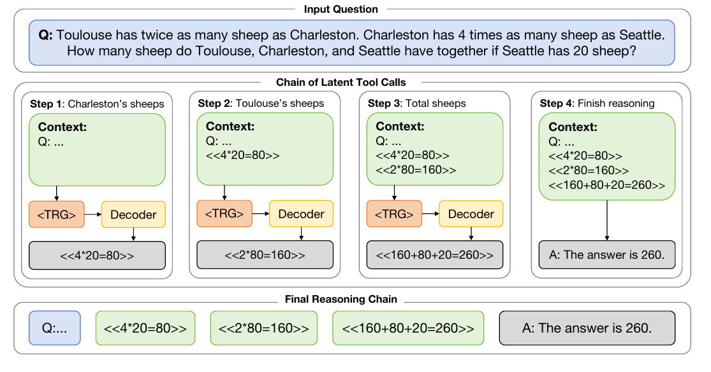

CoLT: Reasoning with Chain of Latent Tool Calls

<BDY>…<TRG> 种子序列 (body token 载 latent, trigger token 选解码器);Part 2:取种子 token 的末层 hidden states H, 送进一个层数 $N_d \ll N_m$ 的可微解码器 (默认 Transformer, 也可 RNN / multi-hot), 解压回文本;Part 3:解出的 <<75+5=80>> 拼回上下文进入下一轮, 主损失 (CE over 种子 token) + latent 损失 (解码器 CE) 联合回传。关键:主模型的输入永远是纯文本, 只有「压缩→解压」这一跳走 latent。
1. 出发点 (Motivation)
Chain-of-Thought 有效, 但代价是逐 token 生成整条推理链, 长链推理时算力吃紧。一条主流的提速路线是隐式 / latent CoT:干脆离开 token 空间, 在连续向量里推理。代表作 Coconut 把一步推理换成若干 latent token, 上一步的输出 hidden state 直接当下一步的输入 embedding;CODI 在末 token 上做 hidden-state 自蒸馏保持一致性;COLAR、SIM-CoT 再往上叠 trajectory 对齐、token-chunk 分布、step-level 监督等信号。
这条路的通病, 作者点得很直接: (1) 要动模型结构、(2) 要密集训练 (常配课程学习跑很多 epoch)、(3) 丢可解释性——因为推理发生在人读不懂的 dense 向量里。三条合起来限制了它们「换个任务就能用」的实用性。
CoLT 的破题灵感来自两个近期观察:
- Zhu et al. (2025) 提出 CoT token 本质是在存中间结果, 只要关键结果被保住, CoT 可以用不同形式表示 (作者自己组的前作, 见 thinking-visual-primitives-2026 那类「CoT 里塞非文本单元」的思路);
- DeepSeek-OCR 证明单个视觉 token 就能装下可解压成多 token 的信息。
于是作者反问:既然一个视觉 token 能「打包」一段文本, 那 LLM 自己是不是也能生成小「包裹」, 之后再解压回原文? 把这个「解压」动作做成一次工具调用——但工具不是黑箱 API, 而是一个可微的神经网络解码器, 梯度能一路回传到主模型。这就是 CoLT (Chain-of-Latent-Tools) 的全部立意:
让主模型永远停在文本 token 空间做推理 (保能力、保可读), 把「压缩一步 → 解压成文本」这件苦活外包给一个层数很小的可微解码器。
种子 token (seed token)
主模型吐出的特殊 token, 其 hidden state 里压缩了一步推理的信息。分两种:body 与 trigger。
<BDY> body token
latent 信息的「载体」, 数量 $n\ge 0$ 可调 (超参), 决定压缩率。
<TRG> trigger token
每次工具调用结尾唯一的触发 token, 额外承担「选哪个解码器」的路由职责。
可微解码器 (differentiable decoder)
吃种子 token 的末层 hidden states, 自回归解压回文本。层数 $N_d \ll N_m$, 用主模型前 $N_d$ 层初始化。
latent tool call
一次「吐种子 → 触发解码器 → 拿回文本 → 拼回上下文」的循环, 类比一次工具调用, 但整条可微。
#L (latent length)
推理链长度指标 = 每步计为 $L_s+1$ ($L_s$ 个种子 token + 1 次额外前向), 越短越高效。
2. 方法 (Method)
整个框架就两个模块:主模型 \(M\) (Llama-3.2-1B, \(N_m\) 层) 和一组解码器 \(\mathcal{D}=\{D_1,\dots,D_n\}\)。给定问题 \(Q\), 主模型走一条多步链 \(R\) 到答案 \(A\), 途中反复「起工具调用 → 解码器处理」直到不再需要。
2.1 起工具调用 (Raising)
一步会起工具调用的推理长这样:
—— 翻译: [Q] 是问题, [PR] 是之前已经解码成文本的推理步。主模型在正常自回归时, 决定压缩这一步, 就连吐 n 个 body token 当「空白载体」、1 个 trigger token 收尾。body token 数量是超参 (控制压缩强度), 但 trigger 必须且只有 1 个。
作者用一个 token→解码器映射 \(f\) 初始化 CoLT:当一次调用以某个 trigger token 结尾, 就查 \(f\) 选出对应解码器。种子序列 \(S=(s_1,\dots,s_{L_s})\) 被视作这次调用的「体」, 主模型跑完后, 取这些种子 token 的末层 hidden states \(H=(h_1,\dots,h_{L_s})\in\mathbb{R}^d\) 作为「种子 embedding」, 交给解码器 \(D=f(s_{L_s})\) 处理。
等价伪代码 — 非原文逐字 (据 §3.1 + Fig. 1 重构):推理主循环
def colt_generate(M, decoders, token2decoder, question):
context = tokenize(question) # [Q]
while True:
# 主模型自回归, 直到吐出 <eos> 结束这一步
step_tokens, hidden = M.generate(context, return_hidden=True)
if not raised_tool_call(step_tokens): # 没有 <TRG> → 普通文本步 / 终答
context += step_tokens
if is_final_answer(step_tokens):
return decode_text(context)
continue
# 起了工具调用:取种子 token 的末层 hidden states
seed_pos = positions_of(step_tokens, kind="BDY_or_TRG")
H = hidden[-1][seed_pos] # (L_s, d) ← 末层
D = decoders[token2decoder[step_tokens[-1]]] # trigger 选解码器
R = D.unpack(H) # 解压回文本 token(见 2.2)
context += R # [PR] + [R] 作新上下文
关键设计:主模型「看到的输入」永远是解压后的文本 (context += R), 只有 hidden state 这一跳短暂离开文本空间。这就是它宣称「保住预训练文本推理能力」的机制根源。
2.2 处理工具调用 (Processing)
解码器把种子 embedding \(H\) 解压回文本 \(R=(r_1,\dots,r_{L_r})\)。因为解码器是可微神经模块, 梯度能回传到主模型, 实现主模型 + 解码器联合优化。主实验用的是 Transformer 解码器:与主模型同构, 但层数 \(N_d \ll N_m\);并用主模型前 \(N_d\) 层的参数初始化它 (复用低层特征)。
先把 \(H\) 投影到解码器输入空间, 再自回归解码:
—— 翻译: $P_D$ 是个线性投影层, 把主模型的 hidden state $H$ 映到解码器能吃的 embedding $Z$;然后解码器就把 $Z$ 当「前缀」, 像普通语言模型一样一个字一个字地把这一步推理 (比如 <<4*20=80>>) 生成出来。$\phi$ 是解码器参数。
等价伪代码 — 非原文逐字 (据式 1–2 + §3.2 + 附录 B.1 重构):Transformer 解码器
class TransformerDecoder(nn.Module):
def __init__(self, main_model, N_d):
# 与主模型同构但只有 N_d 层, 且用主模型前 N_d 层初始化
self.layers = deepcopy(main_model.layers[:N_d])
self.proj = nn.Linear(d_main, d_dec) # P_D:线性投影
self.lm_head = main_model.lm_head
def unpack(self, H): # H: (L_s, d_main)
Z = self.proj(H) # 式(1): Z = P_D(H)
out = []
prefix = Z # 种子 embedding 当前缀
while not eos(out): # 式(2): 自回归
h = self.layers(prefix)
r = sample(self.lm_head(h[-1]))
out.append(r)
prefix = cat(prefix, embed(r))
return out
2.3 监督训练目标 (Supervised objectives)
两块损失。第一块保证主模型会正确地起工具调用 (吐对种子 token):
—— 翻译: 对主模型吐的每个种子 token $s_k$ 算标准交叉熵。$\theta$ 是主模型参数。直白说:教主模型「在该压缩的地方, 老老实实吐出 <BDY>…<TRG>」。
第二块保证解码器能把种子解压对, 对解出的文本 token 算 CE:
—— 翻译: 对解码器解出的每个文本 token $r_k$ 算交叉熵——让它学会把压缩的 hidden state 还原成正确的等式。注意原文式(4) 印成了 $p_\phi(s_k\mid\dots)$, 结合上下文应为解出的文本 token $r_k$、求和上界 $L_r$(见 §4 讨论)。
最终监督损失就是两者相加, 因为整条链可微, 一次反传同时更新 \(\theta\) 和 \(\phi\):
—— 翻译: 训练数据怎么造? GSM8k-Aug 把推理写成一串等式 (如 «25/5=5»), 作者把每个等式当成一次独立的 latent tool call, 每次调用是一条训练样本——这是能「2 epoch 就收敛」的关键工程简化。
等价伪代码 — 非原文逐字 (据式 3–5 重构):监督训练一步
def sup_loss(M, D, batch):
# batch: 一个等式步, 目标文本 R = "<<25/5=5>>"
ctx, seed_targets, text_targets = batch # [Q]+[PR], 种子 token 目标, 文本目标
seed_logits, hidden = M(ctx) # 主模型前向
L_main = cross_entropy(seed_logits, seed_targets) # 式(3)
H = hidden[-1][seed_positions(ctx)] # 末层种子 hidden states
Z = D.proj(H)
text_logits = D.teacher_forcing(Z, text_targets)
L_lat = cross_entropy(text_logits, text_targets) # 式(4)
return L_main + L_lat # 式(5), 一次反传更新 θ 与 φ
2.4 用强化学习探索更多路径 (RL)
监督训练只学会了「复述黄金 CoT」。要挖掘黄金链之外的正确路径, 作者上 RL。只要选的解码器支持采样, 整条推理就能看成一次多轮对话:每轮 = (prompt \(P\), 主模型输出 \(C\), 解码器输出 \(R\))。从主模型和解码器都采样, 就能为同一问题 \(Q\) 收集多条轨迹, 套 GRPO:
—— 翻译: 标准 GRPO。对同一题采 G 条轨迹, 每条含 N 轮工具调用, 用「组内标准化的奖励」当优势 $A_i$ 去加权 PPO-clip 比值。$\epsilon=0.1$、KL 罚 $\beta=0.05$ 稳训。
—— 翻译: 奖励在组内做 z-score 标准化 (GRPO 免 critic 的招牌)。奖励 $r_i$:答对=1, 答错但格式对=0.1, 否则=0。「格式对给 0.1」是防灾难性遗忘的软着陆——给模型一个在跑偏时回到正确答案格式的机会。这套和 dapo-2025 的 GRPO 工程一脉相承。
一个漂亮的副产品:因为解码器天生支持采样, CoLT 做 RL 时不需要像连续 latent 方法那样人工往向量里注噪——采样这条探索路径是免费送的。
| 组件 | 起点 | 消融方向 | 最终选择 | 为什么 |
|---|---|---|---|---|
| 解码器结构 | — | Transformer / RNN / multi-hot | 1 层 Transformer | Transformer 最优;RNN 与 Coconut 相当;multi-hot 仅解数字, 是概念验证 (Table 2) |
| 解码器层数 \(N_d\) | 1 层 | 1→6 层 | 1 层 | 6 层比 1 层 acc 高 ~2%, 但算力涨得多, 收益不划算 (Fig. 2) |
| 种子长度 \(L_s\) | 1 | 1 / 2 / 3 | 1 (主) / 2 (更准) | 长度↑ acc 略↑但 #L↑;1seed 效率最好, 2seed 平均分最高 (Table 1) |
| 训练 epoch | — | 2→10 | 2 | acc 4 epoch 后就饱和, 2 epoch 防过拟合 (Fig. 4) |
| 参数初始化 | 随机 | 主模型前 \(N_d\) 层 | 主模型前 \(N_d\) 层 | 复用低层特征, 解压更快更稳 (§3.2) |
| 主模型起点 | SFT checkpoint | 原始 backbone | 原始 backbone | 直接从 Llama-3.2-1B-Instruct 训, 无需先 SFT (基线却是从 SFT 权重初始化) |
3. 结论 (Key findings)

打赢一众 latent 基线, 且更短。 在 in-domain 的 GSM8k-Aug 上, CoLT (1seed) 拿 45.3 acc / 7.73 #L, 相比 COLAR(2x) 的 40.1 / 12.7:准 5 个点、链短近 40%。平均分上 CoLT(2seed) 49.6 领跑所有 latent 方法 (COLAR-2x 48.8, SIM-CoT 47.0, Coconut 27.6, CODI 14.3), 且只训了 2 个 epoch、无课程学习——对比 Coconut/CODI 那种密集课程训练, 训练成本大幅下降。
out-of-domain 泛化不错。 MultiArith 上 CoLT(2seed) 拿 93.9, 甚至反超监督 CoT 基线的 93.2。SVAMP 上略逊 COLAR(2x)(48.3 vs 54.9), 但整体平均分仍最高。
但和显式 CoT 仍有差距。 别被 latent 内战的胜利骗了:CoT 上限 (平均 53.6) 仍明显高于所有 latent 方法。这是用精度换效率的取舍, 不是免费午餐——尤其在难数据集上 (见 §5)。



RL 能进一步逼近 CoT, 且压链。 GSM8k-Aug 上 RL 把 acc 从 45.3 抬到 48.9 (CoT 是 49.4), 差距几乎抹平;MATH 上则明显缩短推理链 (133→94.6)。但作者诚实地指出:RL 的效果强依赖 backbone 家族和数据集 (见 §4)。
4. 实现细节 (Implementation notes)
⚠️ 本文未开源代码。我们穷尽了 arxiv abstract / Papers with Code / 正文 grep / GitHub 搜索 / 作者主页 5 条路径, 均未找到官方 repo (仅在 Awesome-Latent-CoT 列表里被收录)。故本页所有代码块均为据论文公式与附录重构的等价伪代码, 已逐块标注「非原文逐字」, 绝不冒充引用。以下细节全部有据可查:
-
种子 token 复用现有特殊 token, 不新增词表 (附录 A):Llama 用
<|reserved_special_token_0|>当<BDY>、<|reserved_special_token_1|>当<TRG>;Qwen 用<|fim_prefix|>/<|fim_middle|>。这是「少改结构」宣称的具体落地——连新 token 都不加。 -
解码器用主模型前 \(N_d\) 层初始化 (附录 B.1), 投影 \(P_D\) 是单个线性层。主实验 \(N_d=1\) (1 层 Transformer)、\(L_s=1\)。
-
从原始 backbone 直接训, 不先 SFT (§4.1 + 附录 B.1):这是与基线的不对等比较点——基线报告的是从 SFT-tuned 权重初始化的结果, 作者承认这一点并称是「为公平比较取基线原文数字」。读者需自行判断这对谁更有利。
-
#L 的算法暗含额外前向 (§4.1):每个 latent step 记为 \(L_s+1\)——那个「+1」是解码器解压后, 主模型要对新 token 再跑一次前向的成本。作者主动把这笔账算进公平比较, 值得肯定 (很多 latent 方法会藏这笔账)。
-
训练配置 (附录 B.1/B.3):AdamW, weight decay 0, SFT lr 1e-5、RL lr 1e-6, global batch 16, greedy 推理 (温度 0), 4×80GB GPU, HF transformers + accelerate。RL 阶段 G=8 rollouts、温度 1、top-p 0.9, 用 LoRA (r=64, α=128, dropout=0.05) 调主模型、解码器全参微调。
-
MATH 无天然步边界, 靠「每 k=4 token 一步」硬切 (附录 B.2):GSM8k-Aug 有清晰的等式步, 而 MATH 相邻 token 未必强相关——作者把这点明确列为 CoLT 在难数据集上表现差的根因假设, 而非甩锅。
公式排印瑕疵 (paper-vs-notation gap): 式(4) \(\mathcal{L}_{\text{lat}}\) 写作 \(-\frac{1}{L_r}\sum_{k=1}^{L_r}\log p_\phi(s_k\mid Z, r_{\lt k})\), 但求和变量应是解码器解出的文本 token \(r_k\), 印成了 \(s_k\) (种子 token)。结合式(2) 与 §3.2 的文字描述可确认这是笔误, 不影响方法正确性——但对照代码复现时要留意。
5. 批判性总结 (Critical assessment)
Strengths

<TRG> 起工具调用, 解码器把种子 hidden states 解压成等式 (<<4*20=80>>…) 拼回上下文。主模型每步的输入都是纯文本, 最终推理链也完全可读——这是 latent 推理家族里罕见的可解释性。
- 立意干净, 少改结构。 不加新 token、不改主干、解码器用现成层初始化——「换任务就能用」的门槛确实比 Coconut/CODI 低。这是本文最实的卖点。
- 保住可解释性。 Fig. 3 的 case study 显示:每步 latent tool call 都被解压成人类可读的等式, 最终推理链完全是文本。这是隐式推理家族里少见的——大多数 latent 方法的中间态是读不懂的向量。
- RL 兼容是设计出来的, 不是硬凑的。 「解码器支持采样 → 免注噪探索」这个论证链条自洽, Table 3 两 backbone 两数据集都涨。
- 诚实。 主动把「+1 前向」算进 #L、主动承认基线是从 SFT 初始化、主动指出 MATH 切分是硬伤——这种自我披露在追 SOTA 的论文里难得。
Limitations / open questions
- 和显式 CoT 的精度差没抹平, 难数据集尤甚。 MATH 上 CoLT 6.52 (RL 后 7.96) vs CoT 23.5——差 3 倍还多, RL 也救不回来。latent 内战赢了, 但离「无损提速」还很远。
- 只在 ≤1.5B 小模型上验证。 作者自己在 Limitations 里承认, scale 到大模型「可能有额外技术挑战」。1 层解码器压 7B/70B 模型一步推理够不够, 是空的。
- 步边界靠人工定义。 GSM8k-Aug 的成功高度依赖「等式=一步」这个天然切分。一旦步骤更长、更模糊 (MATH/ 开放推理), 「一次工具调用装不下一步」就露馅——latent tool call 的粒度是没解决的核心问题。
- 1 层解码器对扰动敏感。 附录 C 自己观察到:同样 RL, Llama 和 DeepSeek 上效果不一致, 作者假设是「1 层解码器高度敏感」。这暗示主实验为效率选的极简解码器, 稳健性存疑。
- 压缩率其实不高。 主实验 \(L_s=1\)、每步计 2 (含 +1 前向), 对比 COLAR(5x) 名义 5× 压缩——CoLT 的「短」更多来自「每个等式压成 1 步」的数据构造, 而非解码器的极限压缩能力。
When to use / not use
- 适合: 已有清晰步骤分割的结构化推理 (数学等式、代码、可枚举实体检索);想要提速但保留可读推理链;想在小模型上低成本试水 latent 推理;需要 RL 微调 latent 推理器。
- 不适合: 追求逼近显式 CoT 精度上限的高难推理;步骤边界模糊的开放式长推理;直接指望 scale 到大模型 (未验证);对压缩率有硬指标 (CoLT 的强项是效率-可读性平衡, 不是极限压缩)。
延伸阅读 (Further reading)
交叉验证比较 (Cross-validation against similar work) — CoLT 属于「latent CoT 提速」这条线, 直接对手是 Coconut / CODI / COLAR。它们对**同一个问题「推理该在哪、监督信号从哪来」**给出了不同答案:
| 工作 | 核心结论 | 关键观察 | 与本文的异 / 同 |
|---|---|---|---|
| 本文 CoLT | 推理留在文本空间, 只把「压缩→解压」外包给可微解码器 | 主模型输入永远是文本 → 保能力 + 保可读; #L 与解码器复杂度几乎无关 | — |
| Coconut (Hao 2024) | 直接在连续 latent 空间推理, 上步 hidden state 当下步输入 | 逐步替换成 latent token, 需课程学习; 中间态不可读 | 同:都信「多 token 可压成单 latent」;异:Coconut 全程在 latent, CoLT 每步解压回文本——可读性与训练成本因此分道 |
| CODI (Shen 2025) | 靠末 token 的 hidden-state 自蒸馏保持 latent 与显式一致 | 跨层蒸馏缓解灾难性遗忘 | 同:都想保住原能力;异:CODI 用蒸馏约束 latent, CoLT 用「强制解回文本」这一更硬的约束;结果 CODI 主结果 (14.3) 远逊 CoLT (49.3) |
| COLAR (Tan 2025) | 把连续 token 压成向量分布, 从而支持采样 + RL | 分布化是为了能采样做 RL | 同:都做到 RL 兼容;异:COLAR 靠「latent 分布采样」, CoLT 靠「解码器采样」免注噪; CoLT 更短 (7.7 vs 12.7) 但 COLAR 某些 OOD (SVAMP) 更准 |
分歧的可能成因: 这些方法在同一批 GSM8k 系数据、同量级模型上比, 差异主要来自**「latent 信息以什么形式被约束」**——Coconut 不约束 (纯 latent, 最难训最不可读)、CODI 用蒸馏软约束、COLAR 用分布约束、CoLT 用「必须能解回文本」的硬约束。约束越硬, 越贴近预训练文本空间, 训练越省、越可读, 但压缩上限也越受限——这解释了为什么 CoLT 训得快、读得懂, 却也没能在压缩率上碾压 COLAR。评测口径也有微妙差异 (CoLT 从原始 backbone 训 vs 基线从 SFT 初始化), 读数字时需打折。
相关工作 (Related work)
- dapo-2025 — CoLT 的 RL 用的就是 GRPO, DAPO 是同门 (字节) 对 GRPO 的大规模工程强化, 想深挖 §2.4 的 RL 细节可参照。
- thinking-visual-primitives-2026 — 同样是「往 CoT 里塞非纯文本单元」的思路 (那里是 points/bboxes, 这里是 latent tool call), 作者组前作脉络相承。
- rls-razor-2025 — 解释「为何 on-policy RL 少遗忘」;CoLT 用「格式对给 0.1 奖励」防遗忘的做法, 可与其 KL-min 视角对照。
6. 研究启发 (Transferable takeaways)
1. 「工具调用」当抽象容器
把任何「压缩→解压」「编码→解码」的子过程包装成一次可微工具调用, 主模型只管「何时调、调哪个」。这个抽象能迁移到检索 (解码成实体)、多模态 (解码成图像, 作者已点名 BLIP3o 路线) 等场景——解码器可换, 主循环不变。
2. 硬约束 > 软约束换可解释性
「强制 latent 必须能解回文本」是比蒸馏 / 分布对齐更硬的约束, 代价是压缩上限受限, 回报是训练更省、中间态可读。当你的系统需要可审计的中间态, 优先考虑「强制落回可读空间」而非「事后对齐黑箱表征」。
3. 反直觉点:解码器复杂度 ≠ 压缩量
Fig. 2 显示 #L 几乎不随解码器层数变——「一次能压多少」由种子长度(信息瓶颈) 决定, 而非解码器算力。想提压缩率, 加宽瓶颈 (种子数) 比堆解码器层数有效。
4. 反直觉点:格式奖励是遗忘的软着陆
RL 里「答错但格式对给 0.1」不是凑数——它给模型一个在跑偏时回到正确输出格式的梯度, 实测能防灾难性遗忘。小信号、大作用, 可复用到任何有明确输出格式的 RL 任务。
5. 用现成特殊 token 省词表改动
复用 reserved_special_token / fim 这类预留 token 当功能位, 避免动词表和 embedding 层——一个让「新机制零结构改动接入」的实用工程技巧。
6. 采样能力是 RL 的免费入场券
只要子模块 (这里是解码器) 原生支持采样, 就能把整个流程建模成多轮对话直接套 GRPO, 省掉「往连续表征注噪」的人工探索。设计可微模块时保留采样接口, 等于预留了 RL 兼容性。
讨论 / Comments
评论托管在本仓库的 GitHub Discussions, 需 GitHub 账号。